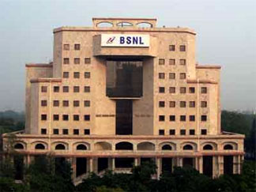

BHARAT SANCHAR NIGAM LIMITED (BSNL) was incorporated on 15th september 2000 . It took over the business of providing of telecom services and network management from the erstwhile Central Government Departments of Telecom Services (DTS) and Telecom Operations (DTO), with effect from 1st October' 2000 on going concern basis. The company provides telecom services throughout the country excluding Delhi & Mumbai. BSNL is a 100% Govt. of India owned Public Sector Undertaking with an authorized share capital of Rs. 40,000 crore and paid up capital of Rs. 12,500 crores comprising of Rs. 5,000 crores of Equity and Rs. 7,500 crores of Preference shares capital. Its total income during FY 2020-21 was Rs.18, 595 crores.
BSNL VISION:
*Be the leading telecom service provider in India.
*Be a customer focused organization with excellence in customer care and marketing.
*Leverage technology to provide affordable and innovative telecom services / products across customer segments.
MISSION:
*Becoming the most trusted, preferred and admired telecom brand.
*Providing reliable telecom services that are value for money.
*Generating value for all stakeholders – employees, shareholders, vendors and business associates.
*Excellence in customer services- friendly, reliable, time bound, convenient and courteous service.
*Offering differentiated products / services tailored to different service segments.
*Developing a marketing culture that is responsive to customer needs.
*Maximizing return on existing assets with sustained focus on profitability.